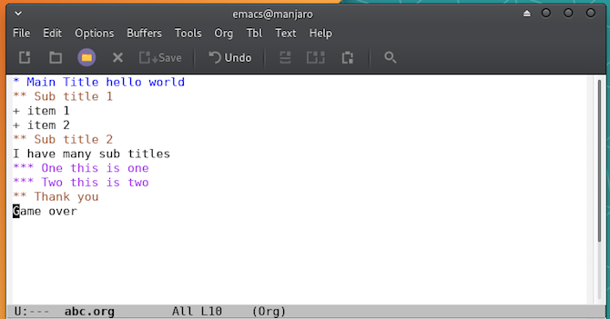
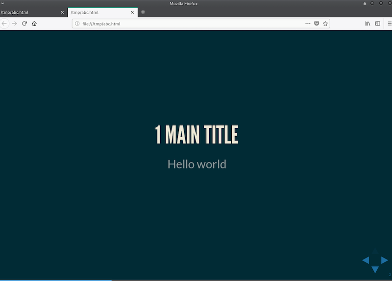
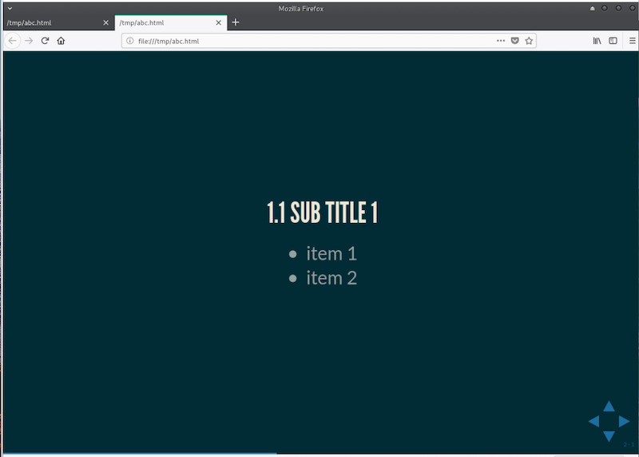

使用 Emacs 的 Org 模式来做 Presentation
使用 Emacs 的 Org 模式已经有一段时间了，一直想写个简单的教程，但是想想关于 Org 的文章多如牛毛，该入坑的都已经入了，没入的也不会因为看了我的文章才入，就一直没写。 但是最近的一件事让我找到了一个切入点，让我忍不住分享一下 Emacs 的 Org 模式，那就是纯文本转 presentation.
好几年前，我和大多数 IT 从业者一样，特别喜欢 Markdown, 恨不得 Markdown everything… 这其中当然包括了做 presentation. 那时市面上已经有了类似的 app, 当然作为程序员，我还是希望有一个带命令行接口的工具，
于是我写了一个把 Markdown 结合 reveal.js 的 node小工具（reveal.js 本身支持在内部写 Markdown, 但我做的是把外部 Markdown 文件用 reveal.js 渲染出来）。 从这个项目高达两位数的 star 数来看，这样的需求还是很有群众基础的。
但是最近，当我再次 clone 这个尘封已久的项目，打算写个 presentation 的时候，nodejs 果然没让我失望，真的跑不起来了。。。 当然今天的我已经不是那个只知道 Markdown 天下第一的哔～了。我已经使用 Org mode 有一段时间了，我觉得以 Emacs 的强大社区，肯定有 reveal.js 相关的 package 了。
果不其然，没用几行配置，我就成功的用 Org mode 写出了一个 presentation, 如果你看到这里还感兴趣的话，跟着我做吧：
安装 Emacs
brew cask install emacs
安装带 GUI 的 Emacs 可以减少入门曲线。
修改配置文件
在 ~~/.emacs.d/init.el~ 中输入下面的内容（如果不熟悉 Emacs 话可以用其他编辑器打开这个文件）：
(require 'package)
(let* ((no-ssl (and (memq system-type '(windows-nt ms-dos))
(not (gnutls-available-p))))
(proto (if no-ssl "http" "https")))
(add-to-list 'package-archives (cons "melpa" (concat proto "://melpa.org/packages/")) t) ;; org
(add-to-list 'package-archives '("org" . "https://orgmode.org/elpa/") t)
(add-to-list 'package-archives '("melpa" . "http://melpa.milkbox.net/packages/") t)) ;; yasnippet collection
(package-initialize)
(setq package-enable-at-startup nil)
(unless (package-installed-p 'use-package)
(package-refresh-contents)
(package-install 'use-package))
;; 上面一大堆是套路配置，不用管，下面才是真正起作用的几行
(use-package ox-reveal
:ensure ox-reveal)
(setq org-reveal-root "http://cdn.jsdelivr.net/reveal.js/3.0.0/")
(setq org-reveal-mathjax t)
再次打开 Emacs 等待配置载入完成
编写 Org 文档的内容
新建一个以 .org 结尾的文件，输入如下内容：
* Main Title hello world ** Sub title 1 + item 1 + item 2 ** Sub title 2 I have many sub titles *** One this is one *** Two this is two * Thank you Game over
按住 control, 然后按 c 再按 e (保持 control 被按住) 会出现 export 菜单，这时可以松开 control, 按 R(shift + r) 再按 B(shift + b), 你的浏览器就会打开并渲染刚刚生成的 reveal.js 的 html 了， 这就是新鲜出炉的 presentation 了。



希望本文可以让你入坑。